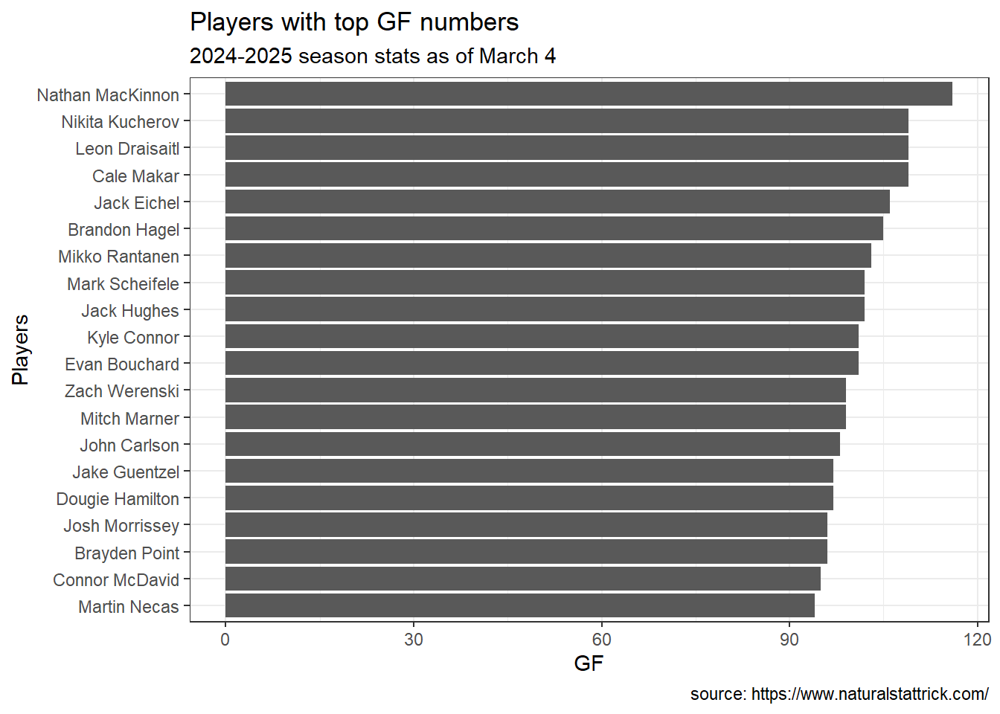
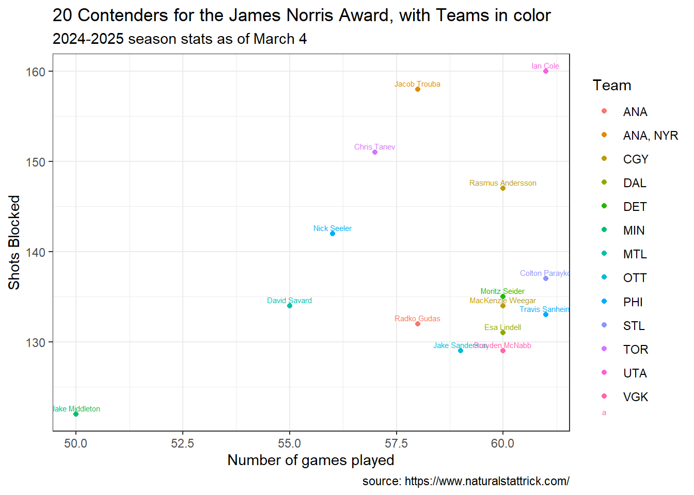

Here are my selections for the hockey trophies listed and described below in each section.
For each award, I have created a ballot of five players, ranked from 1 (first choice) to 5 (fifth choice). For each ballot, I have provided one to three visualizations that explain and justify the ballot.
THE DATA
At minimum, we will use the data from naturalstattrick.com for player statistics for the season to date (Oct 2024 to March 2025).
Presented to the goaltender “adjudged to be the best at this position.” NHL general managers vote on this award.
Maybe we should look at games played versus saves made by the goalie.
Code
goalie_m1 <-lm(Saves~GP, data=Goalie)
The red line on the graph shows where an approximate cut-off point could be. We want the players above the line.
Code
ggplot(data=Goalie, aes(x=GP, y=Saves))+geom_point()+theme_bw()+geom_abline(aes(intercept=goalie_m1$coefficients["(Intercept)"],slope=goalie_m1$coefficients["GP"]))+geom_hline(yintercept=1100, color="red")+labs(x="Games Played",y="Saves made by the goalie",caption ="source: https://www.naturalstattrick.com/",title="Saves Made per Games Played",subtitle ="2024-2025 season stats as of March 4")
Code
goalie_m2 <-lm(Saves~Shots.Against, data=Goalie)
Maybe we should also look at saves versus shots against.
The red line on the graph shows where an approximate cut-off point could be. We want the players above the line.
Code
ggplot(data=Goalie, aes(x=Shots.Against, y=Saves))+geom_point()+theme_bw()+geom_abline(aes(intercept=goalie_m2$coefficients["(Intercept)"],slope=goalie_m2$coefficients["Shots.Against"]))+geom_hline(yintercept=1100, color="red")+labs(x="Shots Against",y="Saves made by the goalie",caption ="source: https://www.naturalstattrick.com/",title="Saves Made per shots against",subtitle ="2024-2025 season stats as of March 4")
Code
goalie_m3 <-lm(SV.~GP, data=Goalie)
We can also look at percent saved versus games played.
Code
ggplot(data=Goalie, aes(x=GP, y=SV.))+geom_point()+theme_bw()+geom_abline(aes(intercept=goalie_m3$coefficients["(Intercept)"],slope=goalie_m3$coefficients["GP"]))+#geom_hline(yintercept=1100, color="red")+labs(x="Games Played",y="% Shots against that were saves",caption ="source: https://www.naturalstattrick.com/",title="% Saves Made Versus Games Played",subtitle ="2024-2025 season stats as of March 4")
I want to see who are the top 5 in GP, Saves, and SV. (percent saves).
Player GP Shots.Against Saves SV.
1 Akira Schmid 1 12 12 1.000
2 Erik Portillo 1 29 28 0.966
3 Nico Daws 5 88 85 0.966
4 Marcus Hogberg 7 151 143 0.947
5 Connor Hellebuyck 46 1262 1170 0.927
Vezina ballot
Once the data is filtered by > 40 games played and > 1100 saves, it seems like the best discerning feature would be % Saves (if I understand the data correctly). Once those are all sorted out, the top 5 players below will be on my Vezina Trophy ballot.
Player GP Shots.Against Saves SV. Rank
1 Connor Hellebuyck 46 1262 1170 0.927 1
2 Andrei Vasilevskiy 48 1335 1232 0.923 2
3 Mackenzie Blackwood 44 1229 1125 0.915 3
4 Igor Shesterkin 44 1263 1144 0.906 4
5 Ilya Sorokin 45 1237 1117 0.903 5
Hart Memorial Trophy
Awarded to the “player judged most valuable to his team.” This isn’t necessarily the best overall player, but rather the one who contributes most significantly to his team’s success.
It seems like lots of games played plus lots of goals made would be a nice place to start. People towards the top right of the graph below should be taken into consideration for significant contribution.
Code
ggplot(Individual.Skater, aes(x=GP, y=Goals))+geom_point()+theme_bw()+labs(x="Games Played",y="Goals made",caption ="source: https://www.naturalstattrick.com/",title="Goals versus Games Played",subtitle ="2024-2025 season stats as of March 4")
That being said, not just the folks making the goals should be considered. Defense should be considered. One way to assess this might be with the OnIce.Skater data, using the GF statistics (count of goals for that player’s team while that player is on the ice).
ggplot(hartmemorial, aes(x=GF, y=reorder(Player, GF)))+geom_bar(stat="identity")+theme_bw()+labs(x="GF",y="Players",caption ="source: https://www.naturalstattrick.com/",title="Players with top GF numbers",subtitle ="2024-2025 season stats as of March 4")

Now I want to see a scatter plot with names in it.
When looking at this graph, the best contendors will be located in the top right.
Code
ggplot(hartmemorial, aes(x=GP, y=GF))+geom_point()+theme_bw()+geom_text(aes(label=Player), hjust=0.5, vjust=-0.5, size=2)+labs(title ="20 Contenders for the Hart Memorial Award",x="Number of games played",y="Count of goals while player is on ice",caption ="source: https://www.naturalstattrick.com/",subtitle ="2024-2025 season stats as of March 4")
Hart Memorial ballot
After consideration, it seems to me that there is not an appreciable difference between playing 54 and 62 games, so that will not be considered. The only factor I will consider needed is GF, because this already sorts out players who have only played a small number of games. Therefore I will take the top 5 in the GF category:
Player GF GP Rank
1 Nathan MacKinnon 116 61 1
2 Leon Draisaitl 109 60 2
3 Nikita Kucherov 109 57 3
4 Cale Makar 109 61 4
5 Jack Eichel 106 59 5
James Norris Memorial Trophy
Awarded to the defenseman who demonstrates “the greatest all-around ability” at the position.
I will look at Scoring Chance- SCF, count of scoring chances for that player’s team while that player is on the ice. Is that a good measure of defense? Don’t know, but here we go.
Player Team GP Shots.Blocked
1 Ian Cole UTA 61 160
2 Jacob Trouba ANA, NYR 58 158
3 Chris Tanev TOR 57 151
4 Rasmus Andersson CGY 60 147
5 Nick Seeler PHI 56 142
6 Colton Parayko STL 61 137
7 Moritz Seider DET 60 135
8 MacKenzie Weegar CGY 60 134
9 David Savard MTL 55 134
10 Travis Sanheim PHI 61 133
11 Radko Gudas ANA 58 132
12 Esa Lindell DAL 60 131
13 Jake Sanderson OTT 59 129
14 Brayden McNabb VGK 60 129
15 Jake Middleton MIN 50 122
I was curious if the 2 code chunks above would reveal some overlap between top SCF and top shots blocked players. But given the comparison (in the code below) and the FALSE results, there is no overlap:
I put team in color here. I wondered if we would see clusters by team. But there is nearly no overlap, so it actually looks pretty terrible:
Code
ggplot(data=top_shotsblocked, aes(x=GP, y=Shots.Blocked, color=Team))+geom_point()+theme_bw()+geom_text(aes(label=Player), hjust=0.5, vjust=-0.5, size=2)+labs(title ="20 Contenders for the James Norris Award, with Teams in color",x="Number of games played",y="Shots Blocked",caption ="source: https://www.naturalstattrick.com/",subtitle ="2024-2025 season stats as of March 4")

This is better (no color)
As titled, here are the top 20 contenders for the James Norris Award. Generally, the top right-ish of the graph would be ranked higher on the ballot.
Code
ggplot(data=top_shotsblocked, aes(x=GP, y=Shots.Blocked))+geom_point()+theme_bw()+geom_text(aes(label=Player), hjust=0.5, vjust=-0.5, size=2)+labs(title ="20 Contenders for the James Norris Award",x="Number of games played",y="Shots Blocked",caption ="source: https://www.naturalstattrick.com/",subtitle ="2024-2025 season stats as of March 4")
James Norris ballot
Here is the James Norris ballot, based on shots blocked:
For fun, let’s look at Goals versus Shots.Blocked. I am not sure how useful this is. In the end, I am not using shots blocked data.
Code
ggplot(data=caldermemorial, aes(x=Goals, y=Shots.Blocked))+geom_point()+theme_bw()+#geom_text(aes(label=Player), hjust=0.5, vjust=-0.5, size=2)+labs(title ="Shots Blocked versus Goals for Calder Memorial assessment",x="Individual Goals",y="Shots Blocked",caption ="source: https://www.naturalstattrick.com/",subtitle ="2024-2025 season stats as of March 4")
Now we will take a look at games played and GF (count of goals for that player’s team while that player is on the ice).
Player Rank
1 Kirill Marchenko 1
2 Matthew Knies 2
3 Wyatt Johnston 3
4 Marco Rossi 4
5 JJ Peterka 5
Frank J. Selke Trophy
Awarded to the forward who best excels in the defensive aspects of the game.
In hockey, a forward is a player whose primary role is to score goals and create offensive plays. They can be center, left wing, or right wing. I am going to assume that these correspond to Position C, L, and R.
I don’t understand the difference between this and the James Norris trophy, other than I need to sort by Position =C, L, or R. So I will use top shots blocked because that’s what I ended up with for the James Norris ballot.
Now I want to visualize this. I added Position by color, and last name only so that the plot was less busy.
Sadly there is a little “a” under the Position legend that I can’t get rid of, and some overlap of names.
Code
ggplot(data=frank_contendors, aes(x=GP, y=Shots.Blocked, color=Position))+geom_point()+theme_bw()+geom_text(aes(label=LastName), hjust=0.5, vjust=-0.5, size=2)+labs(title ="20 Contenders for the Frank J. Selke Trophy",x="Number of games played",y="Shots Blocked",caption ="source: https://www.naturalstattrick.com/",subtitle ="2024-2025 season stats as of March 4")
Player Position GP Shots.Blocked Rank
1 Brandon Tanev L 59 91 1
2 Alex Tuch R 59 87 2
3 Noel Acciari C 63 73 3
4 Rickard Rakell R 62 66 4
5 Vincent Trocheck C 61 66 5
Lady Byng Memorial Trophy
Presented to the player who exhibits “the best type of sportsmanship and gentlemanly conduct combined with a high standard of playing ability.”
I guess I could look at total penalties per game and misconduct. I could also consider assists. Maybe players who make lots of assists are helpful sportsmanlike people.
I’ll create a new variable, PIM/GP - penalty minutes per games played.
Let’s look at PIM and GP. Maybe the players with lots of games played but low penalty minutes should be considered, which would be clustered around the bottom right of the scatterplot.
Code
ggplot(data=ladyb_contenders, aes(x=GP, y=PIM))+geom_point()+theme_bw()+#geom_text(aes(label=LastName), hjust=0.5, vjust=-0.5, size=2)+labs(title ="Penalty Minutes per games played",x="Number of games played",y="Penalty Minutes (PIM)",caption ="source: https://www.naturalstattrick.com/",subtitle ="2024-2025 season stats as of March 4")
Maybe the players with high assists and low PIM/GP should be considered.
Based on the graph below, I will broadly slash all players who have >1 PIM/GP and < 30 assists so I can narrow things down.
Code
ggplot(data=ladyb_contenders, aes(x=Total.Assists, y=PIM_per_GP))+geom_point()+theme_bw()+#geom_text(aes(label=LastName), hjust=0.5, vjust=-0.5, size=2)+labs(title ="PIM/GP per Total Assists",x="Total Assists",y="Penalty Minutes (PIM)/Games Played",caption ="source: https://www.naturalstattrick.com/",subtitle ="2024-2025 season stats as of March 4")
This narrowing gives me 60 players to sort based on more nuanced criteria:
Now I will add a layer showing total penalties as dot size.
Based on this information, looks like the best contendors will be in the bottom middle of the graph below, so I will further slash those with < 45 assists and > 0.3 PIM/GP.
Then I will sort that by PIM/GP and chose the 5 with the lowest PIM/GP.
Code
ggplot(data=ladyb_contenders_narrow, aes(x=Total.Assists, y=PIM_per_GP, size=Total.Penalties))+geom_point()+theme_bw()+#geom_text(aes(label=LastName), hjust=0.5, vjust=-0.5, size=2)+labs(title ="PIM/GP per Total Assists + Games Played",x="Total Assists",y="Penalty Minutes (PIM)/Games Played",caption ="source: https://www.naturalstattrick.com/",subtitle ="2024-2025 season stats as of March 4")
---title: "Assignment 5"subtitle: "Hockey stuff"author: "Sharon"date: "2025-03-18"format: htmlcategories: [Assignment, DataViz]image: kidhockey.jpgcode-fold: truecode-tools: truedescrption: "Hockey data stuff"---# OVERVIEWHere are my selections for the hockey trophies listed and described below in each section.For each award, I have created a ballot of five players, ranked from 1 (first choice) to 5 (fifth choice). For each ballot, I have provided one to three visualizations that explain and justify the ballot.# THE DATAAt minimum, we will use the data from naturalstattrick.com for player statistics for the season to date (Oct 2024 to March 2025).```{r include=FALSE}library(tidyverse)library(readxl)``````{r}Individual.Skater <-read.csv("SkaterIndividualstats.csv")OnIce.Skater <-read.csv("SkaterOnicestats.csv")Goalie <-read.csv("Goalies.csv")Individual.Skater.Rookie <-read.csv("RookieSkaterindividual.csv")OnIce.Skater.Rookie <-read.csv("RookieSkaterOnIce.csv")Rookie.Goalie <-read.csv("RookieGoalies.csv")```# Vezina TrophyPresented to the goaltender "adjudged to be the best at this position." NHL general managers vote on this award.Maybe we should look at games played versus saves made by the goalie.```{r goalie_m1}goalie_m1 <- lm(Saves~GP, data=Goalie)```The red line on the graph shows where an approximate cut-off point could be. We want the players above the line. ```{r Saves made per games played}ggplot(data=Goalie, aes(x=GP, y=Saves))+ geom_point()+ theme_bw()+ geom_abline(aes(intercept=goalie_m1$coefficients["(Intercept)"], slope=goalie_m1$coefficients["GP"]))+ geom_hline(yintercept=1100, color="red")+ labs(x="Games Played", y="Saves made by the goalie", caption = "source: https://www.naturalstattrick.com/", title="Saves Made per Games Played", subtitle = "2024-2025 season stats as of March 4")``````{r goalie_m2}goalie_m2 <- lm(Saves~Shots.Against, data=Goalie)```Maybe we should also look at saves versus shots against.The red line on the graph shows where an approximate cut-off point could be. We want the players above the line.```{r Saves made per shots against}ggplot(data=Goalie, aes(x=Shots.Against, y=Saves))+ geom_point()+ theme_bw()+ geom_abline(aes(intercept=goalie_m2$coefficients["(Intercept)"], slope=goalie_m2$coefficients["Shots.Against"]))+ geom_hline(yintercept=1100, color="red")+ labs(x="Shots Against", y="Saves made by the goalie", caption = "source: https://www.naturalstattrick.com/", title="Saves Made per shots against", subtitle = "2024-2025 season stats as of March 4")``````{r goalie_m3}goalie_m3 <- lm(SV.~GP, data=Goalie)```We can also look at percent saved versus games played.```{r percent Save per Games Played}ggplot(data=Goalie, aes(x=GP, y=SV.))+ geom_point()+ theme_bw()+ geom_abline(aes(intercept=goalie_m3$coefficients["(Intercept)"], slope=goalie_m3$coefficients["GP"]))+ #geom_hline(yintercept=1100, color="red")+ labs(x="Games Played", y="% Shots against that were saves", caption = "source: https://www.naturalstattrick.com/", title="% Saves Made Versus Games Played", subtitle = "2024-2025 season stats as of March 4")```I want to see who are the top 5 in GP, Saves, and SV. (percent saves).Top 5 in GP:```{r top 5 in GP}Goalie |> select(Player, GP, Shots.Against, Saves, SV.) |> arrange(desc(GP)) |> slice_head(n=5)```Top 5 in Saves:```{r top 5 in Saves}Goalie |> select(Player, GP, Shots.Against, Saves, SV.) |> arrange(desc(Saves)) |> slice_head(n=5)```Top 5 in SV.:```{r top 5 in SV}Goalie |> select(Player, GP, Shots.Against, Saves, SV.) |> arrange(desc(SV.)) |> slice_head(n=5)```## Vezina ballotOnce the data is filtered by > 40 games played and > 1100 saves, it seems like the best discerning feature would be % Saves (if I understand the data correctly). Once those are all sorted out, the top 5 players below will be on my Vezina Trophy ballot.The vezina ballot:```{r final vezina ballot}Vezina_ballot <- Goalie |> select(Player, GP, Shots.Against, Saves, SV.) |> filter(GP > 40) |> filter(Saves > 1100) |> arrange(desc(SV.)) |> mutate(Rank=row_number()) |> slice_head(n=5)Vezina_ballot```# Hart Memorial TrophyAwarded to the "player judged most valuable to his team." This isn't necessarily the best overall player, but rather the one who contributes most significantly to his team's success.It seems like lots of games played plus lots of goals made would be a nice place to start. People towards the top right of the graph below should be taken into consideration for significant contribution.```{r}ggplot(Individual.Skater, aes(x=GP, y=Goals))+geom_point()+theme_bw()+labs(x="Games Played",y="Goals made",caption ="source: https://www.naturalstattrick.com/",title="Goals versus Games Played",subtitle ="2024-2025 season stats as of March 4")```That being said, not just the folks making the goals should be considered. Defense should be considered. One way to assess this might be with the OnIce.Skater data, using the GF statistics (count of goals for that player's team while that player is on the ice).I'm sorting the top 20 so it's not too busy:```{r}hartmemorial <- OnIce.Skater |>select(Player, GF, GP) |>arrange(desc(GF)) |>slice_head(n=20)``````{r}ggplot(hartmemorial, aes(x=GF, y=reorder(Player, GF)))+geom_bar(stat="identity")+theme_bw()+labs(x="GF",y="Players",caption ="source: https://www.naturalstattrick.com/",title="Players with top GF numbers",subtitle ="2024-2025 season stats as of March 4")```Now I want to see a scatter plot with names in it.When looking at this graph, the best contendors will be located in the top right.```{r}ggplot(hartmemorial, aes(x=GP, y=GF))+geom_point()+theme_bw()+geom_text(aes(label=Player), hjust=0.5, vjust=-0.5, size=2)+labs(title ="20 Contenders for the Hart Memorial Award",x="Number of games played",y="Count of goals while player is on ice",caption ="source: https://www.naturalstattrick.com/",subtitle ="2024-2025 season stats as of March 4")```## Hart Memorial ballotAfter consideration, it seems to me that there is not an appreciable difference between playing 54 and 62 games, so that will not be considered. The only factor I will consider needed is GF, because this already sorts out players who have only played a small number of games. Therefore I will take the top 5 in the GF category:The hart memorial ballot:```{r final Hart Memorial ballot}hartmemorial_ballot <- OnIce.Skater |> select(Player, GF, GP) |> arrange(desc(GF)) |> slice_head(n=5) |> mutate(Rank=row_number())hartmemorial_ballot```# James Norris Memorial TrophyAwarded to the defenseman who demonstrates "the greatest all-around ability" at the position.I will look at Scoring Chance- SCF, count of scoring chances for that player's team while that player is on the ice. Is that a good measure of defense? Don't know, but here we go.I will also look at shots blocked.```{r}OnIce.Skater |>select(Player, Team, GP, SCF) |>arrange(desc(SCF)) |>slice_head(n=15) -> top_SCFtop_SCF``````{r}Individual.Skater |>select(Player, Team, GP, Shots.Blocked) |>arrange(desc(Shots.Blocked)) |>slice_head(n=15) -> top_shotsblockedtop_shotsblocked```I was curious if the 2 code chunks above would reveal some overlap between top SCF and top shots blocked players. But given the comparison (in the code below) and the FALSE results, there is no overlap:```{r}top_shotsblocked$Player %in% top_SCF$Player```Therefore I will choose top shots blocked.I put team in color here. I wondered if we would see clusters by team. But there is nearly no overlap, so it actually looks pretty terrible:```{r}ggplot(data=top_shotsblocked, aes(x=GP, y=Shots.Blocked, color=Team))+geom_point()+theme_bw()+geom_text(aes(label=Player), hjust=0.5, vjust=-0.5, size=2)+labs(title ="20 Contenders for the James Norris Award, with Teams in color",x="Number of games played",y="Shots Blocked",caption ="source: https://www.naturalstattrick.com/",subtitle ="2024-2025 season stats as of March 4")```This is better (no color)As titled, here are the top 20 contenders for the James Norris Award. Generally, the top right-ish of the graph would be ranked higher on the ballot.```{r}ggplot(data=top_shotsblocked, aes(x=GP, y=Shots.Blocked))+geom_point()+theme_bw()+geom_text(aes(label=Player), hjust=0.5, vjust=-0.5, size=2)+labs(title ="20 Contenders for the James Norris Award",x="Number of games played",y="Shots Blocked",caption ="source: https://www.naturalstattrick.com/",subtitle ="2024-2025 season stats as of March 4")```## James Norris ballotHere is the James Norris ballot, based on shots blocked:```{r}James_norris_ballot <- top_shotsblocked |>slice_head(n=5) |>mutate(Rank=row_number())James_norris_ballot```# Calder Memorial TrophyGiven to the player "adjudged to be the most proficient in his first year of competition." This is essentially the rookie of the year award.```{r}Individual.Skater.Rookie |>select(Player, GP, Goals, Shots.Blocked) |>arrange(desc(Goals)) -> caldermemorial```For fun, let's look at Goals versus Shots.Blocked. I am not sure how useful this is. In the end, I am not using shots blocked data.```{r}ggplot(data=caldermemorial, aes(x=Goals, y=Shots.Blocked))+geom_point()+theme_bw()+#geom_text(aes(label=Player), hjust=0.5, vjust=-0.5, size=2)+labs(title ="Shots Blocked versus Goals for Calder Memorial assessment",x="Individual Goals",y="Shots Blocked",caption ="source: https://www.naturalstattrick.com/",subtitle ="2024-2025 season stats as of March 4")```Now we will take a look at games played and GF (count of goals for that player's team while that player is on the ice).```{r}OnIce.Skater.Rookie|>select(Player, GP, GF) |>arrange(desc(GF)) -> caldermemorial2```Now let's get the top 10 from both of those data sets (the "lots of goals" dataset and the "high GF" dataset) and see who overlaps.```{r}caldermemorial <- caldermemorial |>slice_head(n=10)caldermemorial2 <- caldermemorial2 |>slice_head(n=10)calder_overlap <- caldermemorial |>inner_join(caldermemorial2, by="Player") |>select(Player) |>distinct()```Here are the ones that overlap between my two categories:```{r}calder_overlap```## Calder memorial ballot:Since these have already been sorted above, I'm going to grab the top 5 for my ballot:```{r}calder_overlap |>mutate(Rank=row_number()) |>slice_head(n=5) -> calder_memorial_ballotcalder_memorial_ballot```# Frank J. Selke TrophyAwarded to the forward who best excels in the defensive aspects of the game.In hockey, a forward is a player whose primary role is to score goals and create offensive plays. They can be center, left wing, or right wing. I am going to assume that these correspond to Position C, L, and R.I don't understand the difference between this and the James Norris trophy, other than I need to sort by Position =C, L, or R. So I will use top shots blocked because that's what I ended up with for the James Norris ballot.```{r}Individual.Skater |>select(Player, Position, GP, Shots.Blocked) |>filter(Position %in%c("C","L","R"))|>arrange(desc(Shots.Blocked)) |>slice_head(n=20) |>mutate(LastName =sub(".*\\s", "", Player)) -> frank_contendors```Now I want to visualize this. I added Position by color, and last name only so that the plot was less busy.Sadly there is a little "a" under the Position legend that I can't get rid of, and some overlap of names.```{r}ggplot(data=frank_contendors, aes(x=GP, y=Shots.Blocked, color=Position))+geom_point()+theme_bw()+geom_text(aes(label=LastName), hjust=0.5, vjust=-0.5, size=2)+labs(title ="20 Contenders for the Frank J. Selke Trophy",x="Number of games played",y="Shots Blocked",caption ="source: https://www.naturalstattrick.com/",subtitle ="2024-2025 season stats as of March 4")```In the end, I will use top shots blocked.## Frank J. Selke Trophy ballot```{r}frank_ballot <- frank_contendors |>slice_head(n=5) |>select(-c("LastName")) |>mutate(Rank=row_number())frank_ballot```# Lady Byng Memorial TrophyPresented to the player who exhibits "the best type of sportsmanship and gentlemanly conduct combined with a high standard of playing ability."I guess I could look at total penalties per game and misconduct. I could also consider assists. Maybe players who make lots of assists are helpful sportsmanlike people. I'll create a new variable, PIM/GP - penalty minutes per games played. ```{r}ladyb_contenders <- Individual.Skater |>select(Player, GP, Total.Penalties, Misconduct, PIM, Total.Assists) |>mutate(PIM_per_GP=PIM/GP)```Let's look at PIM and GP. Maybe the players with lots of games played but low penalty minutes should be considered, which would be clustered around the bottom right of the scatterplot.```{r}ggplot(data=ladyb_contenders, aes(x=GP, y=PIM))+geom_point()+theme_bw()+#geom_text(aes(label=LastName), hjust=0.5, vjust=-0.5, size=2)+labs(title ="Penalty Minutes per games played",x="Number of games played",y="Penalty Minutes (PIM)",caption ="source: https://www.naturalstattrick.com/",subtitle ="2024-2025 season stats as of March 4")```Maybe the players with high assists and low PIM/GP should be considered.Based on the graph below, I will broadly slash all players who have >1 PIM/GP and < 30 assists so I can narrow things down.```{r}ggplot(data=ladyb_contenders, aes(x=Total.Assists, y=PIM_per_GP))+geom_point()+theme_bw()+#geom_text(aes(label=LastName), hjust=0.5, vjust=-0.5, size=2)+labs(title ="PIM/GP per Total Assists",x="Total Assists",y="Penalty Minutes (PIM)/Games Played",caption ="source: https://www.naturalstattrick.com/",subtitle ="2024-2025 season stats as of March 4")```This narrowing gives me 60 players to sort based on more nuanced criteria:```{r}ladyb_contenders_narrow <- ladyb_contenders |>filter(Total.Assists>30) |>filter(PIM_per_GP<1)length(ladyb_contenders_narrow$Player)```Now I will add a layer showing total penalties as dot size.Based on this information, looks like the best contendors will be in the bottom middle of the graph below, so I will further slash those with < 45 assists and > 0.3 PIM/GP.Then I will sort that by PIM/GP and chose the 5 with the lowest PIM/GP.```{r}ggplot(data=ladyb_contenders_narrow, aes(x=Total.Assists, y=PIM_per_GP, size=Total.Penalties))+geom_point()+theme_bw()+#geom_text(aes(label=LastName), hjust=0.5, vjust=-0.5, size=2)+labs(title ="PIM/GP per Total Assists + Games Played",x="Total Assists",y="Penalty Minutes (PIM)/Games Played",caption ="source: https://www.naturalstattrick.com/",subtitle ="2024-2025 season stats as of March 4")```## Lady Byng Memorial Trophy ballot ```{r}ladyb_ballot <- ladyb_contenders_narrow |>filter(Total.Assists>45) |>filter(PIM_per_GP<0.3) |>arrange(PIM_per_GP) |>slice_head(n=5) |>mutate(Rank=row_number())ladyb_ballot```